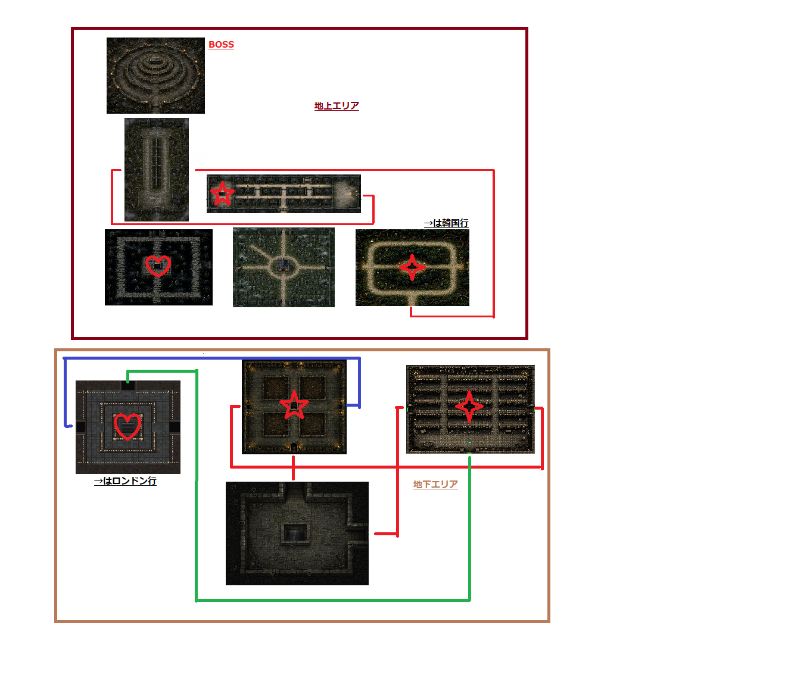

The Graveyard, drawn as one connected chart
Contributed by @nepure · Covers the Graveyard region on the normal route

How to read the chart
The chart splits the region into two boxes. The upper box is the surface area and the lower box is the underground area. Coloured lines join the map edges that actually connect, so a line leaving one map on its right side and entering another on the left is a single doorway rather than two separate routes.
The annotations are written in Japanese. The upper box is labelled the surface area and the lower box the underground area, the arrow on the surface marks the way through to Korea, and the arrow underground marks the way through to London. BOSS marks the arena at the top of the surface box.
Where it leads
The hand-drawn symbols are the author's own shorthand for the places worth remembering on a run. Each one sits on the map where that landmark is found.
Two of the three regions that close out the route are reachable from this chart: the surface exit leads to Korea and the underground exit leads to London. The third door, into Monochrome, opens from the same grounds and is covered by the official atlas.